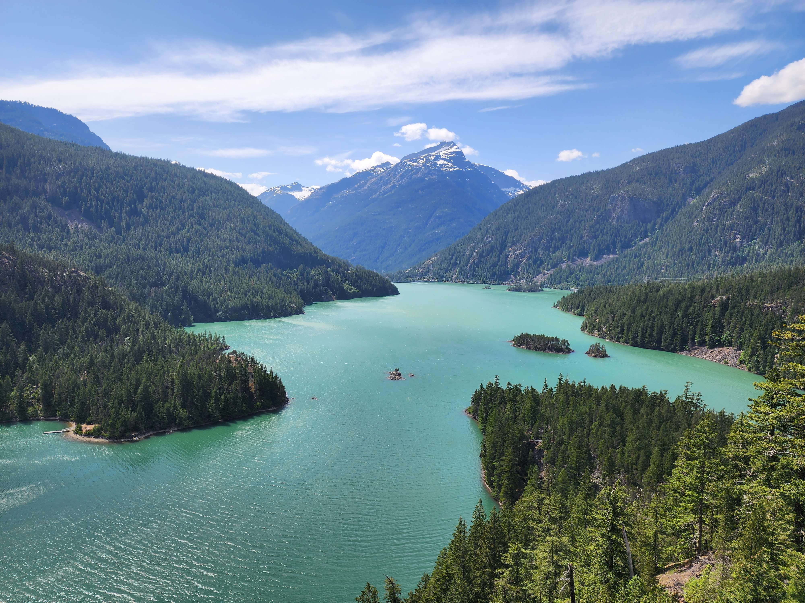
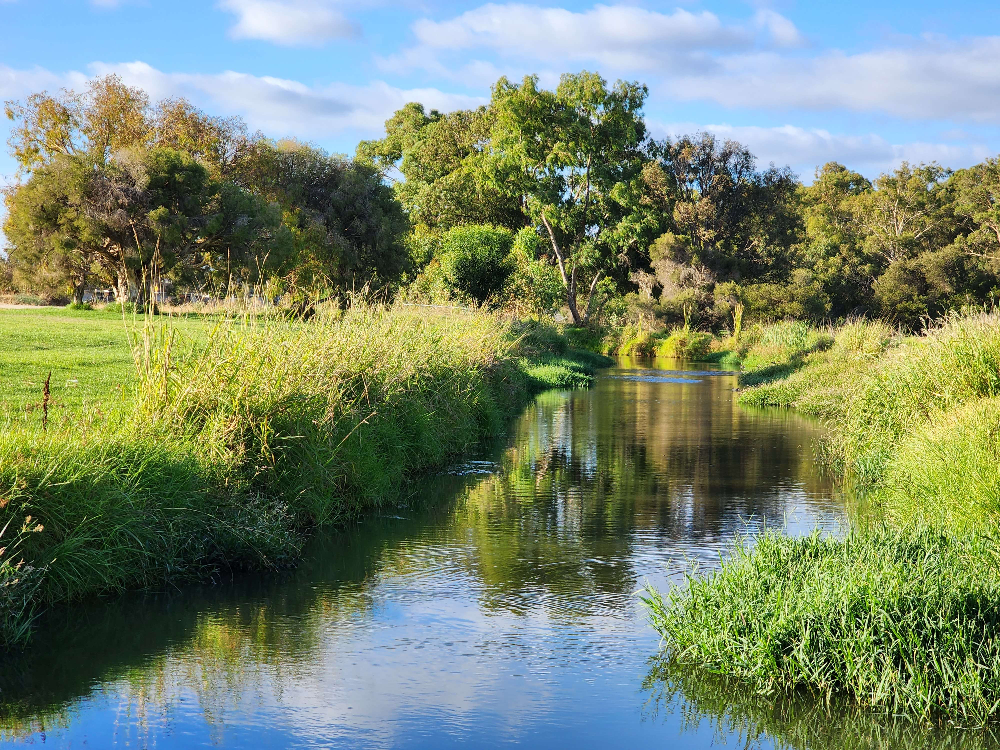

Currently, I am studying at Green River College, working towards a BAS in Software Development, set to graduate in 2025. Born and Raised in Washington State, I spent my childhood in Puyallup. I first started to develop an interest in software development at the age of 14 or 15 when I built my first computer, and started to play games on PC. While attending high school at Emerald Ridge High School (class of 2021), I took two computer science classes, which was my first real introduction to programming, although very simple. During high school, I enrolled in a program called "Running Start". This program allowed me to take courses at a local community college (Pierce College) in order to work on earning my Associate's Degree earlier than I would have if I hadn't enrolled in Running Start. One quarter after getting my high school diploma, I graduated from Pierce College with my Associates in Science Track II.
I spent approximately one year searching for which college I wanted to attend, when I was presented with the opportunity to move to Perth, Australia to attend Curtin University to earn my Bachelor's Degree in Computer Science. I was thrilled to learn this, and began all the necessary steps to begin the process of preparing to move halfway across the world. Six months later, after arriving in Perth, I began my studies. Off to a great start, I was loving living in such a warm and dry climate, it was a huge change from the typically cold and wet climate of western Washington.
As time went on though, I started to realize the impact that being away from friends and family had on me though, and being so far away from home, I could only afford to visit home once per year, for Christmas. Before long, I realized that I needed to make a decision. I either needed to deal with my feelings for the next 3 years or so, or move back sooner rather than later, to avoid spending more money on tuition and housing. I decided to move back, as it made the most financial sense, and would relieve me from a huge emotional burden. But I don't regret any of it, as I feel that it was an invaluable experience that taught me things that I could not have learned any other way. I learned all about living on my own, being independent, and self-reliant, which were all things that I had not experienced in the past, as this was the first time I had ever lived away from home. I also learned how much I had taken for granted about my home. Previously, I had talked about how I couldn't wait to get out of Washington, and move somewhere completely different. I hadn't realized how important friends and family were to me, and how much I would actually miss the things that I thought I couldn't wait to leave behind. Now that I am back, I have a renewed appreciation of all the things that I couldn't stand in the past. Not to say I didn't enjoy my time in Australia, I had an amazing time, met some great people, and actually learned quite a bit about software development, and the importance of cyber security within software development, which is actually what inspired me to work on getting a bachelor's in cyber-security after I finish my bachelor's in Software Development.
